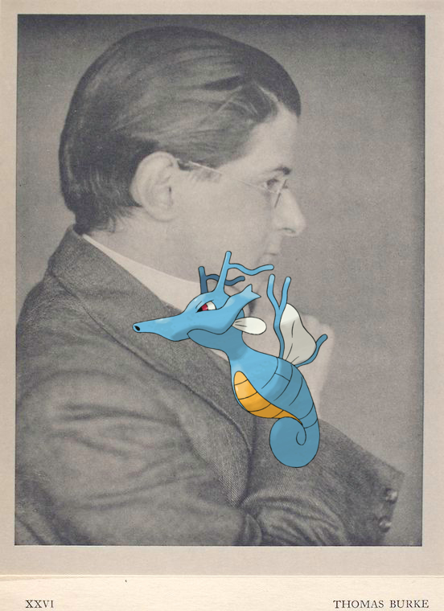
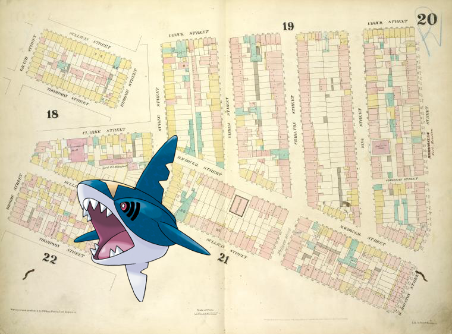
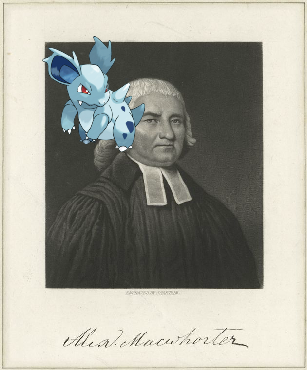

-
Piplup ; France, 1870
-
Beedrill – Because of you
-
Duskull @ Great Neck Station; Bellerose
-
Leafeon, Swablu | Costume des Barabrael.
-
| 1801.
-
Deoxys-Normal, Sharpedo ; Arrival of the royal procession at the custom-house quay
-
Tangela on John Marshall, L.L.D.!
-
Meowth | Général- Major, belge.!
-
Kingdra – Thomas Burke, London, January 25th, 1917..
-
Kabuto, Porygon-Z on CHRISTMAS DINNER [held by] RUSSELL HOUSE [at] "DETROIT,MICH." (HOTEL)!
- 
-
Slowking | Scroll 2, scene 20!
-
Paras, Camerupt – Interior of Sinosee's House, Kurreechane
-
Nidorina @ Alexr. MacWhorter.
-
![Umbreon @ [Xanten Bible.]. http://digitalcollections.nypl.org/items/6bc1b1c0-c5f8-012f-3a75-58d385a7bc34](media/finding-QBoBfRyr.png) Umbreon – [Xanten Bible.]
Umbreon – [Xanten Bible.] -
Manectric on Manicure Girls Act I
-
![Deino @ Norddeutscher Lloyd Bremen, speise-karte [menu card], lunch.! http://digitalcollections.nypl.org/items/6026c8f0-c544-012f-7878-58d385a7bc34](media/finding-ZibxYAFX.png)
-
 Milotic | Roll, image 9
Milotic | Roll, image 9 -
Octillery + K.K. Oestere. Armée, Feldmarschall in Galla!
-
Mantine ; Geo. [George] Taylor..
-

-
![Floette, Swadloon + Netherlands, 1900-09 [part 4].. http://digitalcollections.nypl.org/items/a7257540-c554-012f-acbc-58d385a7bc34](media/finding-NJcUEKsY.png) Floette, Swadloon on Netherlands, 1900-09 [part 4].
Floette, Swadloon on Netherlands, 1900-09 [part 4]. -
 Trubbish on Germany, Prussia, 1800-1805
Trubbish on Germany, Prussia, 1800-1805 -

-
Horsea ; Poetry. Signed J.S. Rye?.
-
 Palkia, ; Atlas of Otsego Co., New York.!
Palkia, ; Atlas of Otsego Co., New York.! -
Machoke on Wm. Pepperrell..